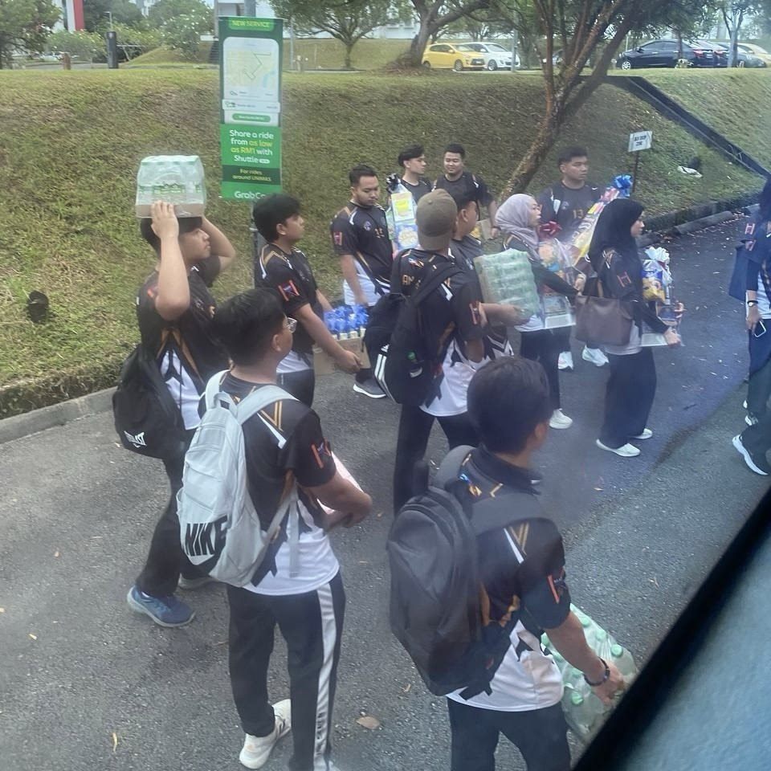
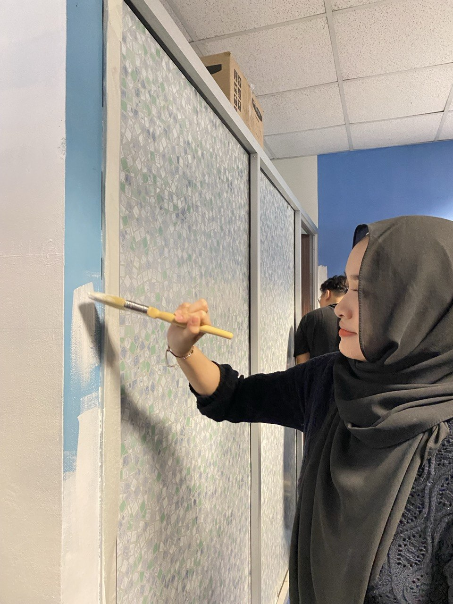

⋆｡°✩Welcome to my personal portfolio website ⋆｡°✩.
I am a 23 year old Year 3 Network Computing student at FCSIT, UNIMAS. I'm someone who enjoys exploring new things especially when it comes to technology. I'm still learning and discovering what I want to achieve in the future but I'm excited to see where my journey in the IT field takes me.
I am a Year 3 Network Computing student at the Faculty of Computer Science and Information Technology (FCSIT), Universiti Malaysia Sarawak (UNIMAS). I am interested in cybersecurity, especially Open-Source Intelligence (OSINT) tools. I enjoy researching and learning about how these tools are used to gather and analyse information. During my free time, I enjoy watching Netflix and playing games. My career goal is to work in cybersecurity or another IT-related field. Creating this portfolio has also helped me learn more about web programming and how websites are developed.
My academic journey hasn't always been focused on technology. Before studying at UNIMAS, I pursued a Diploma in Science at UiTM Samarahan Campus 2. At first, I thought Science was the right path for me, but as time went on, I slowly lost interest in the course and realised that it wasn't something I wanted to continue pursuing. This experience made me reconsider what I wanted to study and I eventually decided to take a different direction by choosing Network Computing at UNIMAS. Although it was a change from my previous field, it gave me the opportunity to explore technology and discover my interest in cybersecurity. I'm still learning and improving my technical skills and I hope to build a career in cybersecurity or another IT-related field in the future. Creating this portfolio is also part of my learning journey as it allows me to practise HTML, CSS and JavaScript while expressing a little more about myself.
Here are some of the projects and activities I have participated in during my studies at UNIMAS.
This project focused on creating and building my personal portfolio website with HTML, CSS and JavaScript. I utilized HTML to structure the content of my site, CSS to style its look and JavaScript to incorporate interactive elements that enhance the site's appeal and usability. During the development process, I discovered how these three technologies coordinate to build an operational website. This project has been among my most pleasurable learning experiences as I've always been keen on building a website for myself. While encountering challenges in learning to write and comprehend the code, I have learned new knowledge and enhanced my confidence in web development. The ability to produce something that reflects who I am and share it with others inspires me to keep learning. I am eager to utilize the knowledge and skills I have acquired for upcoming projects.
This project involved developing a movie booking database using MySQL as part of a group assignment. The system was designed to manage movie information, customer bookings and seat availability. Through this project, I learned how databases can be used to organise information and manage transactions. My responsibility was to work on the booking transaction script using SQL commands. I implemented transaction operations to check seat availability, update the number of available seats and record customer bookings. I also learned how COMMIT and ROLLBACK help maintain data consistency during database transactions. This project helped me improve my understanding of SQL and the importance of accurate data management in a booking system.
On 17 May 2025, I participated in a Handball Knowledge Transfer Programme held at SMK Pesantren Abdul Taib, Asajaya, Sarawak, from 8:00 a.m. to 2:00 p.m. The programme involved 24 school students and aimed to introduce them to the basic skills of handball while encouraging their interest in sports and higher education. Throughout the programme, we conducted various activities, including demonstrations of basic handball techniques, practical training sessions and mini-games. These activities allowed the students to learn and practice handball skills in a fun and interactive environment. Besides focusing on sports, our group also introduced university programmes and positive values to the participants to help increase their awareness of higher education opportunities. This programme was a meaningful experience because it allowed us to share our knowledge with the school community through sports. It also provided an opportunity to interact with the students and contribute to an enjoyable learning environment. Through this activity, I gained experience in community engagement and learned how knowledge can be shared in a simple and interesting way.

This project explored how artificial intelligence (AI) and multi-factor authentication (MFA) can be used to improve system security and protect user accounts against password attacks. The main objective was to design a more secure authentication approach by identifying suspicious login activities and applying suitable security measures based on the level of risk. For my part of the project, I worked on the system design particularly the risk-scoring approach and mitigation strategies. I explored how different factors such as failed login attempts, unfamiliar IP addresses, login locations and unusual user behaviour could be used to identify potentially suspicious activities. I also studied how different levels of risk could lead to different security responses such as additional authentication, account restrictions or security notifications. This project held special significance for me since cybersecurity is a primary interest of mine in technology. During the assignment, I explored various authentication techniques, cybersecurity risks and how security frameworks can react to unusual activities. I encountered numerous ideas that I had not known before which made the learning experience even more engaging. This experience deepened my passion for cybersecurity and inspired me to keep investigating the area in the future.
As part of the PPD1041 Volunteerism course, I participated in a group project on 8 January 2025 to clean, organise and improve the SIR room at UNIMAS. The project aimed to create a cleaner and more comfortable environment while encouraging students to work together and contribute to the university community. During the activity, I was involved in cleaning and painting the room alongside my group members. We divided the responsibilities among ourselves and supported one another to complete the tasks efficiently. Although the work required time, effort and patience, it was a rewarding experience to see the improvements we made together. This project helped me develop important soft skills, particularly teamwork, communication and cooperation. It also gave me the opportunity to interact with other students from my faculty and build new friendships. Overall, this experience taught me the value of working towards a shared goal and became one of the most memorable activities during my first semester at UNIMAS.

Feel free to contact or connect with me! ᯓ★ˎˊ˗
💌Email: afeefadyg13@gmail.com
🗨️LinkedIn: Connect with me!♡